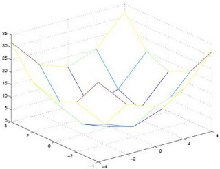

Matlab Öğrenelim
Bkz Python Öğrenelim yazısı.
Artık Matlab yerine Python tavsiye ediyoruz; tüm matematik icerigimiz bu yeni dile geçirildi. Python açık kaynak, bedava, ve hesapsal bilimde artık daha çok kullanılıyor, öğrenciler için üniversite sonrası iş bulmak için daha isabetli olur.
Ama illa Matlab kullanılacaksa, onun yerine aynı dili, komutları, hatta çoğu zaman paketleri içeren açık yazılım Octave faydalı olabilir.
Üç Boyutlu Çizimler
Üç boyutlu çizim yapmak için, meshgrid fonksiyonunu kullanmamız gerekiyor.
Herhangi boyutta fonksiyonu çizmek için, fonksiyona "verilen" değerler gerekir. Eğer bir fonksiyonu soyut hâliyle çizmek istiyorsak, yâni elimizde test verileri o anda yok ise, belli aralıklarla olan girdi X değerlerini "üretmemiz" gerekecektir. 2 boyutlu fonksiyonda, tek x vektörü yeterli olacaktır, fakat üç boyutlu çizimler için "iki" tâne "iki" boyutlu matris gerekir. Bu matrisleri Matlab'de meshgrid fonksiyonu ile otomatik olarak üretebiliyoruz.
Bu matrisler kurulduktan sonra, mesh çizim fonksiyonu ile X, Y ve hesaplanmış fonksiyon değeri olan meselâ R, bir küpe dönüştürülür, öyle ki, girdi x matrisi küpün X tarafından bakılınca görülen değerler, y matrisi Y tarafından bakınca görülen değerler olacaktır. Mesh fonksiyonu bu iki matris değerlerinin tüm kombinasyonlarını üçüncü hesap sonucu matrise bakarak (lookup) üç boyutlu uzayda bir çizim yaratabilecektir.
01: [X,Y] = meshgrid(-4:2:4);
02: display(X);
03: display(Y);
04: R = X.^2 + Y.^2;
05: mesh(X,Y,R);
1'de meshgrid ile -4 ve +4 arasında, her 2 noktada bir, bir nokta oluşturulacaktır. #4'te gösterilen '.' fonksiyonu ise, üst alma işlemini her matris elemanı üzerinde işletmek için kullanılır. Eğer '.' kullanılmazsa (X^2 gibi) sonuç sıfır matrisi olurdu.
Sonuç:
X =
-4 -2 0 2 4
-4 -2 0 2 4
-4 -2 0 2 4
-4 -2 0 2 4
-4 -2 0 2 4
>>
Y =
-4 -4 -4 -4 -4
-2 -2 -2 -2 -2
0 0 0 0 0
2 2 2 2 2
4 4 4 4 4
Temel Vektör, Matris İşlemleri
X matrisini vektöre dönüştürmek için x(:) komutu kullanılır. Bu komut n x n boyutundaki bir matrisi, (n*n) x 1 boyutunda bir matrise çevirecektir. Örnek:
>> r = [3 4; 5 3]
r =
3 4
5 3
>> r(:)
ans =
3
5
4
3
>>
Bir matrisin tek bir satırına ya da kolonuna erişmek için : sembolünü boş olarak kullanınız. Meselâ
>> Z = zeros(3,3);
>> Z
Z =
0 0 0
0 0 0
0 0 0
>> Z(1,:) = [ 1 2 3];
>> Z
Z =
1 2 3
0 0 0
0 0 0
>>
Bu örnekte, önce boş bir matris yarattık, ve 1. satırına bir vektör ataması yaptık.
Vektör Elemanları Arasında İşlemler
Bir de, bâzen ihtiyacımız olan ama standart operasyon olarak gözükmeyen, "iki matrisin elemanları arasında birebir yapılan aritmetik işlemlerden" bahsedelim. Bu işlemler . (nokta) işleci ile gerçekleştirilir.
>> A = [ 4 4 4];
>> B = [ 2 2 2];
>> display(A./B);
ans =
2 2 2
M Dosyalarını Test Etmek İçin
Kod organizasyonu açısından da yararlı olacağını umduğumuz bir numara paylaşmak istiyoruz: Önce bazı Matlab zorunlulukları: 1- Matlab, her fonksiyonunun aynı isimli bir dosya içinde tutulmasını mecbur kılar. Bu dosyaya birden fazla fonksiyon koyabilirsiniz, fakat bir tane dosya ile aynı isimde fonksiyon kesinlikle olmalıdır. 2- fonksiyon içeren dosyaların, betikleme (script) dosyası olmaları mümkün değildir, betikleme derken, dosya ismini Matlab komut satırından yazarak işletilebilecek türden bir dosyadan bahsediyoruz.
Şartlar böyle olunca, bir fonksiyonu geliştirirken, o dosya ismini komut satırına girip test etmek imkansız olmaktadır, çünkü test eden kod işleyen bir koddur ve Matlab'e göre fonksiyon ıceren kodla aynı yerde olamaz.
Bu problemin çözümü şöyle. Fonksiyona her giriş yapıldığında parametrelerin sayısını kontrol edin. Eğer parametre yok ise, fonksiyon komut satırından boş çâğırılıyor demektir. Bu durumda daha önce yazılmış bir betikleme/test/demo kodunu bir fonksiyon üzerinden işletebilirsiniz. Eğer parametre var ise, zâten normal çağırım yapılmış demektir, ve özel bir durum değildir, herşey normal halinde seyredebilir. Aşağıda bunun bir örneğini görüyoruz (dosya isminin fonk.m olduğunu farzedin).
function [ciktiA, ciktiB] = fonk (girdi, M)
if nargin==0, kendiniislet; return; end
...
... (fonk fonksiyonun kodlari buraya)
...
function kendiniislet
A = [ 2 3; 4 5]; % vs vs ...
[ciktiA, ciktiB] = fonk (A, 3);
Sonraki Satıra Geçme
Eğer uzun bir satırı birkaç satıra bölmek istiyorsanız, ... işaretini kullanabilirsiniz. Meselâ
s = 1 -1/2 + 1/3 -1/4 + 1/5 - 1/6 + 1/7 ...
- 1/8 + 1/9 - 1/10 + 1/11 - 1/12;
.. gibi.

Yukarı